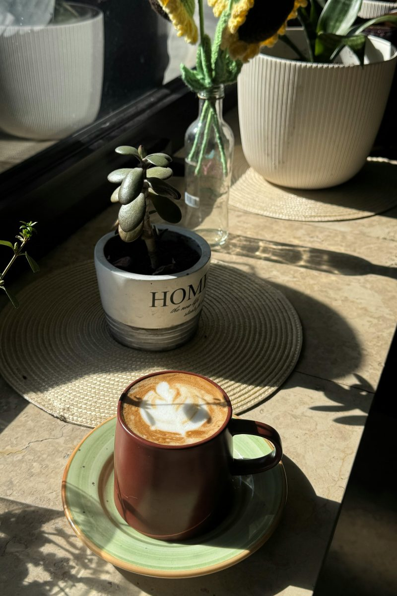
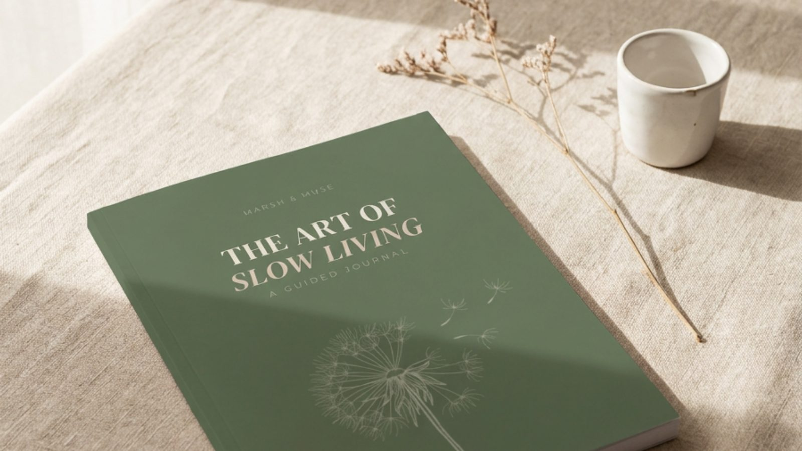

“A blank page is just another thing requiring effort, in a day already full of things requiring effort.”
Here is something I’ve done more than once: bought a beautiful blank notebook, written the date and one aspirational sentence at the top of the first page, and not opened it again for six weeks.
When I found it, the date was still there, and the one sentence, and all the blank pages following it — which is its own particular kind of accusation.
A lot of people have a version of this story. The impulse toward journaling is real. Something about life feels fast, or unclear, or like it’s happening to you rather than being shaped by you — and you think: if I could just write some of this down. Get some of this out. Make sense of it somehow.
But the blank page doesn’t help with that. A blank page is just another thing requiring effort in a day that’s already full of things requiring effort.
What a prompt does that a blank page can’t
A guided journal isn’t a diary. I want to make that distinction clearly, because I think a lot of people avoid them on the basis that they associate “journal” with daily entries about what happened and how they felt — which is a valid practice, but not what I’m describing.
A guided journal is a container. It holds specific questions designed to direct your attention toward things that tend to get lost when life runs fast. It doesn’t ask you to perform reflection. It gives you scaffolding so that reflection can actually happen.
When you sit down to a blank page, you have to decide what to think about, find a way in, and sustain the thread — all before you’ve written a single useful word. When you sit down to a prompt, the question is already there. The cognitive cost is lower. The barrier to actually doing the practice is smaller.
This is the friction principle applied to journaling: a guided prompt removes the obstacle that causes most journaling attempts to stall.
What The Art of Slow Living is built around
The journal I made is structured around four pillars, drawn from the things I kept returning to when my own life felt like it was running ahead of me.
- Clarity. Knowing what actually matters to you, clearly enough to act on it. Not goals in a corporate sense — the quieter kind of knowing. What you want your life to feel like.
- Presence. Being in your life as it’s happening, rather than somewhere ahead of it or behind it. This is harder than it sounds, and I think it’s underrated as a quality of daily experience.
- Nourishment. Feeding yourself in every sense of that word. Not just food, although food matters — the broader question of what actually sustains you.
- Rest. Genuine rest. The kind that restores something. Not collapsed exhaustion at the end of a day that ran too long.
The prompts work through these four areas across 122 pages. Most take five to ten minutes. They’re designed to be done consistently, not perfectly — because consistency is what makes a practice a practice.

The journal is available on Amazon. If you want to see if this kind of structured reflection suits you before committing to anything, the 7-Day Reset at marshmuse.com is a free seven-day version — one prompt a day delivered to your inbox.
Who it’s for
It’s for women who feel like life has been running slightly ahead of them. Who want to think more clearly about what they actually want, but struggle to do that without structure. Who have tried journaling before and found it didn’t stick — often because a blank page is genuinely difficult.
It’s not for people who want an intensive programme. The journal is slow, by design. It asks you to slow down and pay attention — not to sprint toward a better version of yourself. If you come to it three days a week instead of seven, it still works. If you skip a section and come back to it, it still works. It’s made for ordinary life, not for a version of it you haven’t managed to become yet.
If you sat down to write right now — what’s the question you most wish someone had already asked you?
That question is usually the one worth starting with. A good prompt simply hands it to you, so you don’t have to find it alone.
One more thing
When I made this journal, I made it because I needed it. The four pillars aren’t a framework I invented to sell a product — they’re the four areas of my own life that tend to suffer first when things get too fast. Clarity goes. Then presence. Then my relationship with nourishment and rest starts getting treated as optional.
The journal is what I reach for when I need to come back to myself. I hope it does that for whoever finds it.

You can find it on Amazon. The 7-Day Reset at marshmuse.com is free, takes five minutes a day, and is a good starting point if you want to try before you commit.
Marsh & Muse
Made for ordinary life — not for a version of it you haven’t become yet.